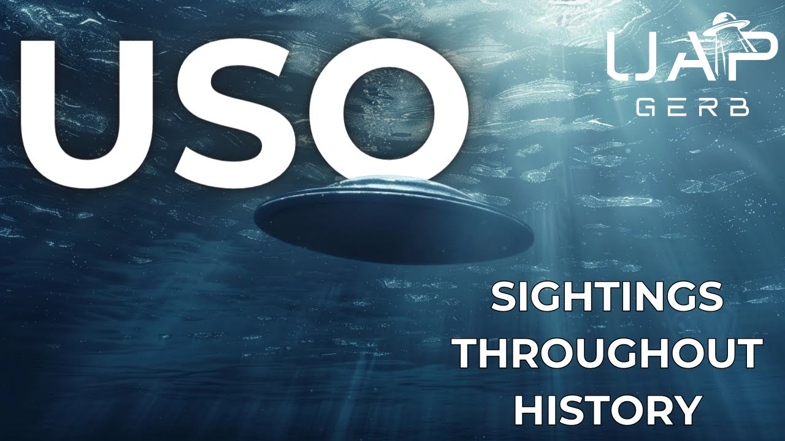

USO Case Book: Unidentified Submerged Objects Throughout History

Published: 2024-04-26 · Duration: 28:09 · Channel: UAP Gerb
Description
An exploration into fascinating and perplexing sightings of USO throughout the 18th-20th century. USO or unidentified submerged objects are the opposite sides of the same coin to their cousins UFO. Often considered one phenomenon, trans medium UAP these objects perform anomalous feats in fluid mediums and retain shapes associated with craft.
In USO sightings, common themes have appeared worldwide over the years. Tic Tac or cigar-shaped objects are often seen hovering just above the water's surface, often gyrating or quivering. Luminous balls of light are seen rising from the depths to perform what seem like curious maneuvers, hovering by a vessel before returning to sea or shooting off into the distance. Egg-shaped or elliptical craft are often seen entering or leaving the oceans. Anomalous wheels of light are seen varying in size and rotation, often time spiraling rapidly and appearing above and below waters.
This video explores a body of sightings from US project Blue Book, the USSR, Australia, 20th-century cases, and the anomaly of repeated maritime light wheel sightings.
0:00 Intro 01:14 Project Blue Book 06:23 Soviet USO Files 11:04 Australian USO Files 15:05 Pre 20th Century USO 16:43 Maritime Light Wheel 24:48 Conclusion
My First USO Video: https://www.youtube.com/watch?v=U-jrx_giINA&t=1174s
Russian USO Doc: https://www.youtube.com/watch?v=gRK8QA98DMo&t=12s
Blue Book USO Research Report: http://www.nicap.org/reports/500804waterufo.net_item.php_id=131.pdf
Blue Book Indexes (All BB Case Files Found Here): https://archive.org/details/ProjectBlueBookIndexes/1960%20index%20redacted%20high%20resolution%20resized?q=Ascension+Island
MV Marcala: http://www.nicap.org/500804northatlantic%5Fdir.htm
SS City of Almaco: https://archive.org/details/1959-11-6964638-NorthOfHawaiianIslands/mode/2up?q=Hawaiian
ORV Whiskey: https://archive.org/details/1960-06-7813739-VicinityAscensionIsland/mode/2up?view=theater
SS Morgantown Victory: https://archive.org/details/1966-01-8697969-26-58N154-46E-Pacific-/mode/2up?q=26.58N
UFO Chronicles of the Soviet Union: a Cosmic Samizdat (29-30): https://archive.org/details/ufochroniclesofs00vall/mode/2up
Russia's USO Secrets (Free on Kindle): https://www.scribd.com/document/691187188/Russias-USO-Secrets-Paul-Stonehill-Philip-Mantle-Z-Library
Nikolay Smirnov: https://en.wikipedia.org/wiki/Nikolay_Ivanovich_Smirnov
Azhazha: https://peoplepill.com/i/vladimir-azhazha/
Psalomschiklov: https://hollisarchives.lib.harvard.edu/repositories/24/archival_objects/2071330
Australian USO Database: https://archive.org/details/AustralianUFOFiles/0%20-%20foia%20australia%20national%20archives%20file%20numbers%20notes/page/n1/mode/2up
Aussie USO Article: https://theozfiles.blogspot.com/2022/08/the-great-uso-show-of-oz.html
Relevant Aussie Case Files: https://archive.org/stream/AustralianUFOFiles/PP959-1_5-3-AIR_1826380_djvu.txt https://archive.org/details/AustralianUFOFiles/E1327_5-4-AIR_part%201_7061046/mode/2up?view=theater
1947 Aussie UAP: http://www.nicap.org/470206portaugusta%5Fdir.htm https://ufos-scientificresearch.blogspot.com/2016/01/port-augusta-south-australia-flying.html
Light Wheels Skeptical Analysis: https://www.semanticscholar.org/paper/An-analysis-of-marine-light-patterns-Naus/325b6b0048b37e61272300104fbd2ee7f8d400fb
March 23, 1873: https://web.archive.org/web/20210613095427/https://www.waterufo.net/item.php?id=1310 https://trove.nla.gov.au/newspaper/article/5865480
March 15, 1879: https://web.archive.org/web/20210613072505/https://www.waterufo.net/item.php?id=12 https://www.nature.com/articles/020291d0
January 5, 1880: https://en.wikisource.org/wiki/The_Book_of_the_Damned/Chapter_21 https://web.archive.org/web/20220815010452/waterufo.net/item.php?id=14
April 4, 1901 (pg 246): https://archive.org/download/biological-mysteries/The%20Complete%20Works%20of%20Charles%20Fort.pdf
June 10, 1909: https://www.gutenberg.org/files/22472/22472-h/22472-h.htm
SS Siberian: https://www.norwayheritage.com/p_ship.asp?sh=sibe1 https://web.archive.org/web/20110903181315/https://blogs.forteana.org/node/25
Ft. Salisbury: http://www.nicap.org/NSID/NSID_DBListingbyDate.pdf https://web.archive.org/web/20120415100852/http://www.ufoinfo.com/magonia/magonia.shtml
Music By: https://www.youtube.com/channel/UCz71_7z7NphLPZ0l_7G3Llg https://www.youtube.com/channel/UCsagn2R7aYEbsYHkE0n4zYQ/videos/videos
THIS VIDEO IS FOR EDUCATIONAL PURPOSE ONLY! FAIR USE PRINCIPLES UNDER SECTION 107 OF THE COPYRIGHT ACT.
ufo #uap #uapnukes #uapdisclosure #ufology #ufonews #ufosightings #uapsightings #ufofootage #uapfootage #hynek #condoncomittee #Jallenhynek #projectsign #projectgrudge #projectbluebook #bluebook #ufocongress #SOL #solfoundation #karlnell #Battelle #UFOreverseengineering #lockheed #skunkworks #lockheedmartin #rosscoulthart #fastwalker #blackvault #slowwalker #kingman #ufocrash #nickredfern #Grusch #Magenta #michaelherrera #USO #TimothyGallaudet
Transcript
Show transcript
The United States most well-known UFO investigation panels, Project Sine, Grudge, and Blue Book, ran from 1949 to 1969 and collected data on more than 13,000 UFO sightings. Of this massive body of sightings, 258 cases reported UFO sightings by ships, and a small percentage of these highlight unidentified submerged objects or transmedium objects. Of course, as I highlighted in my last USO video, go check that out, 1952's OpNav Directive 3820 restricted Navy UFO sightings to only be shared with Air Force Technical Intelligence Center, USAF Intelligence, and Director of Naval Intelligence. So it is no wonder we are left wanting for officially reported USO. But what about the cases we do have? And what other cases that don't appear in Blue Book that span our history are worth our time? Hey guys, it's UAP Gerb, and join me as we take a closer look at USO sightings throughout history. From Blue Book to the modern day to pre-World War I, let's analyze reported cases of unidentified submerged objects. And guys, today we will not just be sticking with the US, but analyzing global cases I find worth studying. As mentioned in the intro, only 2% of Blue Book cases, aka 258 reports, involved sea sightings of UFOs. And 13 of these reports can be classified as good, meeting merit standards for UFO reporting, and a handful of these cases with relevant data describe USO and transmedium objects. Found in the annals of Blue Book indexing is a sighting that occurred in the North Atlantic from the ship Marcala on August 4, 1950. Shockingly, this case is listed by Blue Book as unidentified, and may in fact be my favorite case I will discuss today. At 10pm EDT, the shipmaster, chief mate, and third mate of the MV Marcala saw an unidentified elliptical object approach their vessel from the southwest heading northeast. Passing within 1,000 feet of the ship, the object hovered no more than 100 feet above sea level, with speeds ranging from 25 to 500mph. This object was described as ovular, cylindrically shaped and elliptical, like half an egg cut lengthwise. The object's appearance varied in testimony from shiny aluminum to metallic white. All three witnesses described the object as having a rotary and wobbling motion as it passed closely over the ocean. This event lasted roughly a minute. We can also hop on board the SS city of Almaco, heading from Yokohama to LA just north of the Hawaiian Islands on November 7, 1959. Three witnesses on board the craft observed a bright object streaking across the water from four miles north of the ship. The light emitted three flashes before submerging under the surface, and remember those three flashes as they'll come up later. The Almaco changed its course to investigate, but nothing was discovered. Blue Book labeled this case as a meteor, but while such a prosaic explanation might be possible, the idea of a meteor taking a low pursuit angle and streaking across the water for an extended time period warrants more investigation. And if that case is not anomalous enough for you, let's investigate near the vicinity of Ascension Island in the Atlantic on the 25th of June 1960. At 2334 local time, an Operation Range Vessel, co-named Whiskey, was retrieving the data cassette from a missile test labeled 1802. The small boat was launched to recover the floating cassette, illuminated by strobes and monitored from the whiskey and aircraft above. As the smaller boat got within three to five hundred yards of the strobe, the crew observed a steady white or yellowish light appear 100 yards from the cassette from under the surface and roughly 25 degrees from their boat. This light appeared to be on or very close to the surface, and no waves appeared to break over the light. The event lasted for 10 seconds and was spotted by the RCA photographer, test observer, divers of the recovery crew, as well as the pilot and co-pilot of the recovery plane. Blue Book claimed this sighting was a flare, however. It was established none of the planes or vessels released a flare over this site. And this story reminds me very closely of the encounter I relayed from Lou Elizondo in my last video, where a diving team sent to retrieve missile data observed a massive USO emerge from the depths and intercept the missile. And speaking of rushed Blue Book conclusions, we can look at the SS Morgantown victory on the 11th of January 1966. Near 1,000 miles southeast of Tokyo, the third mate Helmsman and bow lookout observed a cigar shaped object approach their ship. The cigar object glowed with an orange-yellow color, with a bright glow on its front and a body with a duller glow. The body had two lights on top and the entire craft was estimated to be 200 to 250 feet long and 35 to 40 feet in length. The object neared the starboard side of the ship from the horizon and then turned 180 degrees to avoid going over the vessel. It approached the ship within one mile at an elevation of far less than 400 feet. After hovering for 30 seconds, the object crossed in front of the ship and once again changed directions. This incident occurred for three minutes until the object entered the sea. The shipmaster believed a plane had crashed and ordered the ship to conduct a search. Blue Book identified this case as the Cosmos 33 satellite decay, however, this explanation does not account for the object hovering and speed and directional changes. If you would like to read more on ship-based UAP sightings, I highly recommend this PDF on Maritime UFO and USO research in Blue Book. This stat-rich report highlights some exceptional data, such as the split between Blue Book sightings between the Pacific and Atlantic Oceans. Of the 258 ship visual cases, 104 occurred in the Atlantic and 155 in the Pacific. This data highlights while there is an increase in Pacific sightings and possibly a hotspot, UFO and USO sightings are not an isolated incident on water. Historically, the Soviets kept a tight lid on UAP reports. In fact, Russian UFO stigma has been as oppressive if not more than our own here in the United States. One day I would like to cover the USSR UFO stigma and files at length, but that is not the topic of our video today because fortunately, the former Soviet Union has a trove of USO reports that are indeed worth investigating. I will primarily be pulling from the case log of Russia's USO Secrets by Paul Stonehill and Philip Mantle, however, I will only be discussing cases that I find especially worthy of note and can track down additional reporting on. Many of these cases are just stories and we don't have direct access to Soviet declassified files like we do with Blue Book, so I will be doing my best to vet these cases. Let's dive into a handful of the most interesting. On October 7, 1977, the Soviet submarine repair ship Volga was piloting the Barents Sea. Its radar detected an unknown object approaching at a distance of roughly 60 miles. The Volga's Captain Tarantyn approached the bridge to see nine bright disks moving in from the northeast. The disks arrived and circled the vessel for a span of 18 minutes. During the encounter, ship comlinks malfunctioned, similar to the major Jafari in the 1976 Tehran UFO incident. After the disks depart, the ship comms and operations return to normal. Raising concern in the Soviet Navy, fleet admiral Nikolai Ivanovich Smirnov, known as the Likr, issued a directive on mandatory reporting of UFO sightings by Soviet hydrographic scientific research and reconnaissance ships, similar to JANAP-146C and OpNAP Directive 3820. The directive was authorized by naval officer and ufologist Vladimir G. Asaza and signed by Naval Deputy Chief of Staff Pyotr Novoitsev. This case was not only discussed in Russia's USO Secrets, but also in Jacques Valais' book UFO Chronicles of the Soviet Union, a cosmic samizdat, on pages 29 to 30. The link to the book, free of course, will be in the video description, so check that out for yourself. Kamchatka Peninsula is a fascinating region of Russia. The almost 500 square kilometer area separates the Sea of Akhatsk from the Pacific Ocean. According to Russia's USO Secrets and an article written by Soviet scientist Valentin Solomchakov, on a bright day in August of 1970, we follow a group of hydrologists conducting research within a motorboat on Kamchatka Lake. Suddenly, around a kilometer away from the boat, a massive dome of water shot out of the lake, in which rose a grey-colored oval object, estimated to be 40 to 60 meters in length. The object rose to an altitude of nearly 100 meters and hovered motionlessly. As it did, the motorboat engine stalled, horrified, the team gazed at the object until it accelerated away rapidly, restoring functions to their engine. What fascinates me about this case is the disruption to the boat engine, something we see Kevin Knuth discuss at the Sol Foundation, and an aspect of many UFO encounters from vehicles. In the same year of our Soviet submarine case of 77 is one of the strangest encounters I have heard. This information is relayed from the manuscripts and books of Felix Ziggle, one of Russia's most well-respected ufologists. On June 15, 77, the Soviet ship Novolkuznetsk navigated the Gulf of Gayaquil, Ecuador, a radiogram sent by the ship relayed at night straight ahead of the vehicle, a white luminescent sphere rose from the water. It flew around the ship, hovered 20 meters over the vessel, flew higher, zigzagged, and dove back into the water. And with the Russians, my friends, this is just the tip of the iceberg. I'd like to leave you with this clip from this Russian documentary on USOs from 2006, where we see a Russian submarine captain discuss the phenomenon. I highly recommend checking out this whole documentary, and of course the link will be in the description. But one country that has an abundance of declassified UFO slash USO government documentation is Australia. The Australian UFO files consist of a multitude of reports, papers, and files on anomalous sightings. In fact, the Royal Australian Air Force's first official unknown reported, UAS Unusual Aerial Sighting, occurred on January 23rd, 1964, and describes, quote, seen at sea by crew of a vessel northeast point of Groot Island, Western Australia. Large lights and water made compass go haywire, shadow in center of lights rotated clockwise, causing lights to pulsate, end quote. The tampering of instrumentation is something we see again and again pop up in UFO-USO encounters and certainly not missed by Australia. A report was drafted on magnetic disturbance and local compass activity from the sighting. Around this time in the 50s and 60s, the Australian authorities began to take USO and UFO sightings seriously. See these newspaper clippings of civilian UAP encounters near water, clipped and included alongside government and military encounters, such as this 1963 clipping about a fisherman observing a light shoot up from the water, hover, and disappear. Australian intelligence agencies actually track reports of Australian encounters very similar to both the fisherman encounter and our 1977 Soviet encounter. This 1967 incident details a sighting in which both staff from the Department of Works and local Aussies observed lights pop up from out of the sea, rise to a great height, curve and return to the oceans. Many of these sightings were accompanied by three distinct flashes once returned to sea. We're back to our SS City of Almaco case in Project Blue Book. It is worthy to note that Lieutenant Commander of Australian Intelligence A.F. Perry hypothesized these could possibly be experiments conducted by several oil search teams, however this does not seem consistent as this sort of sighting has been seen by Australia, the Soviets, and Americans. Outside of the Australian government, the citizens of the land down under have some fascinating stories of USOs. shooting out of the sea and performing intelligently controlled maneuvers. In 1947, Port Augusta, South Australia, Frederick Walter and Emma Flavel observed five gray oblong objects, rise from the sea and move from northwest to southeast. This sighting was also observed by two railroad workers who described five white or light pink egg shaped objects, rise from the sea but with the added detail of quivering, similar to our MV Marcolla case mentioned earlier in the video. Cigar shapes have been seen in our skies and oceans throughout world and Australian history. Around the time the Australian government began taking UAP seriously, we can find a case that appeared in the July to August issue of Flying Saucer Review, 1966-67. Private pilot C. Adams and television cameraman Mr. Les Hendy reported seeing four or five mysterious objects three miles east of Fraser Island. Approaching the objects from the sky, there appeared to be two dark colored cigars, narrow and up to 100 feet long accompanied by three smaller objects. The two noticed the object standing still in the water and started to submerge as the aircraft approached within two miles. Initially thought to be whales or submarines, the men in independent sightings from nearby Seabrae Hotel observed that the objects did not disturb the surface when submerging, almost like they did not interact with the water. This interaction with fluid is extremely similar to the HMNZS Southland case Knuth describes at the Seoul Foundation, which oddly enough occurred near New Zealand. We all know of the famous alleged UFO encounter by explorer Christopher Columbus, where he and his crew saw what they described as a wax candle rising and falling in the middle of the ocean in the middle of the night. But I don't have enough evidence or resources to talk about this case. What I do want to talk about are two cases that occurred around the turn of the 20th century that are documented by the US Hydrographic Bureau. On November 12, 1887, Captain R.F. Moore of the English steamer the SS Siberian encountered a USO 10 nautical miles off Cape Race, Newfoundland. The captain observed an enormous fireball. Rise from the sea to 50 feet, moving towards the craft, then speed away into the sky. At the time, the Hydrographic Bureau in Washington named it, quote, one of the most rare and most difficult to explain electrical phenomena. But as far as I know, I have not seen any cases of ball lightning exiting the sea. In Africa, the Gulf of Guinea 1902, four men aboard the ship, the Fort Salisbury, witnessed an immense object sinking into the ocean. The cigar shaped object measured nearly 200 meters long and 300 meters wide. As the object passed under the ship, the men on the vessel described two orange lights lit at the front and two blue-green lights shining at the other end. This case, in my opinion, could represent a submarine. However, seen as popular submarines at this time such as the early German U-boat measured solely 41 meters long, I still find this case anomalous. And now we get to an anomalous and perplexing USO called the Maritime Light Wheel. Throughout the late 19th and early 20th century, there was a hotspot of peculiar phenomenon observed by sailors all over the Eastern Hemisphere. And it's worthy to note, this just wasn't an isolated incident. In fact, the Maritime Light Wheel is reported on in that Russian USO documentary I mentioned earlier. We had information that in the ocean, in the seas, in our inner seas, there were cases of some kind of strange phenomena related to the light of water. October of 1969, the Arabian Sea. The command of the Soviet scientific vessel Vladimir Vorobyev unexpectedly woke up without any sign of fear. The instruments showed that the massive object was at a depth of 20 meters. It was still one and a half hundred meters long. They ran to the deck. No, this is not a submarine, as we thought at first. In the depths of the sea, against the clock arrow, slightly bent, there were eight bright rays of the length of 200 meters. The fiery continued for more than half an hour. Then the spot fell apart into several parts and disappeared. Two years before that, the source of light was able to be seen. It was in 1967, in the Samzalivi. The sailors of several Dutch ships then observed the rotation of huge glowing wheels on the water. And from the Glenfolle hot spring, it was clearly seen that the object that was shining on the water was 20-30 meters in diameter. What was it? The question remained unanswered. In the sea, many times, there were glowing wheels that our famous construction engineer, Krylov, called underwater ghosts. The size of the wheels is sometimes huge, up to several kilometers. And many times, they can be seen even from space. They are rarely moved, and quite quickly. The brightness of the glow on the surface of the sea is such that the glare is sometimes visible on the clouds. What is it? Without the glow of microorganisms? But how to explain the amazing symmetry and the huge speed of rotation of the light wheels? Sometimes the clouds slip on the surface of the sea with the speed of a racing car. Microorganisms cannot move so quickly. Moreover, the test of water from the wheels often shows that there are no even traces of the glowing plankton. The light wheel is described as a wheel surrounded by spokes of brilliant white light. That can appear below the water surface or hovering in the air, serving as a possibly trans-medium craft. I must note, also as they talked about in the video, some attribute these USO wheels to a rare interaction between bioluminescent algae and pressure waves in an otherwise calm water. However, I do not think this explanation has any sort of consensus on the existence. But let's review the earliest sightings of these wheels. And mind you, there are many, many, many more sightings of the maritime light wheel that have been observed, but I just want to recount a few of the earliest. On March 27th, 1873, the ship Adelheid voyage from Leban to Singapore. Captain Ledman noticed a peculiar, blinding, milky white light. Appear beneath the waves about two ship lengths from the vessel. Flakes of light described as, quote, flakes of snow when driven over the rocks by a strong wind, end quote. The light followed the ship traveling at four to five knots for roughly half an hour before slowly disappearing. Ledman stated he had not seen anything like this in his 26 years of maritime life. We can find the description of this case in the National Library of Australia, mentioned in an 1873 news article in the Argus. An almost USO flap was experienced in the Persian Gulf from 1879 to 1901. An initial USO sighting was reported to the Admiralty by Captain Evans, a hydrographer for the British Navy on May 15th, 1879. J. E. Pringle of the HMS Vulture reported, quote, luminous waves or pulsations in the water, moving at great speed, end quote, passing under the vulture. It was at this time Pringle noticed two objects in the east and west, what appeared to be, quote, revolving wheels with a center on that bearing and whose spokes were illuminated, end quote. Worthy to note, these two wheels were rotating in equal and opposite directions, and the spokes were about 25 feet in length. It is unclear if these wheels were submerged into the water as the language of this 19th century English gets a little tricky here. The second instance in the Persian Gulf occurred in May of 1880 by British India Company steamer Patna. Captain Avern, Mr. Manning Third Officer and others observed two enormous luminous wheels appear on each side of the ship near 11.30 p.m. The wheels were, quote, whirling around, the spokes of which seemed to brush along the ship. The spokes would be 200 to 300 yards long and resemble the birch rods of the Dame School. Each wheel contained about 16 spokes, and the wheels must have been some 5 to 600 yards in diameter. The spokes would be distinctly seen all the way around, end quote. The men described the appearance of the spokes could almost be represented by standing in a boat and flashing a bull's eyes lantern horizontally along the surface of the water, round and round. The final Persian encounter with this USO was observed on April 4th, 1901, where Captain Hosean of the steamship Kila encountered, quote, Vash shafts of light suddenly appeared. Shaft followed shaft upon the surface of the sea, but it was only a faint light and in about 15 minutes died out, having appeared suddenly and having died out gradually. These shafts revolved at a velocity of about 60 miles an hour. From earlier the year of 1880, I just mentioned, this wheel-like object was possibly seen off the Malabar coast of India on January 5th by commander of the SS Shahjahan. Ari Harris describes a clear night over calm waters, stars shining bright and no moon present. At roughly 10 p.m. Harris and the shift's third officer noticed a milky white circle in the sky, resembling, quote, the nebulae sometimes seen in the heavens. Approaching the object, the sailors stopped the vessel to try and gain an understanding of this anomalous object and its waves of light. The last old example here I will cover occurred on the 10th of June, 1909 and was actually featured in Scientific American, issue 106-51, which relays the Nautical Meteorological Annual published by the Danish Meteorological Institute, a report on a quote, singular phenomena. While sailing through the Straits of Malacca, Captain Gabe of the SS Bintang observed a vast revolving wheel of light under the water, quote, long arms issuing from a center around which the whole system appeared to rotate, end quote. Surfacing, this wheel was so vast, that half of it could be seen at a time with the center laying near the horizon, the wheel was able to move forward and vary in speed and rotation, disappearing when the center was right under the vessel. And like our last 1880 case, these maritime light wheels aren't just seen below the water. In the same Danish Meteorological Institute, there reports another instance in 1910, where Captain Breyer of the Dutch steamship Valencien was sailing in the South China Sea. Here, the captain, first and second mate and the first engineer all observed an object hovering above the water, quote, it looked like a horizontal wheel, rapidly turning. My friends, thank you so much for watching today, as we took a deeper dive into USOs throughout history. Please excuse the rash guard I'm wearing, I just got home from training, but phalanx if you're watching, I'm always open for a sponsor. But anyways guys, I got such a great reaction from my first video on USO, I had to make a follow up and show that it doesn't matter what time period we're in, it doesn't matter what country we're in, there are stories of unexplained things in the water. As far as the maritime light wheel goes, I'm pretty torn on that whether that is a craft object or possibly some sort of more anomalous natural phenomena. I'll include in the video description a kind of not really debunk but a paper, kind of possibly exploring explanations for this phenomena, but still, the fact that these are seen in the Persian Gulf, in Russia, all around the world is fascinating to me, but even more fascinating to me are Australian, Blue Book, and Soviet Files. All depicting very similar experiences, tic-tac-shaped craft, slash cigars, fireballs exiting the water, fireballs exiting the water that are almost curious about the ship, egg shapes leaving the water that frightens the Soviet hydrologists, but we see multiple cases of these sort of lightballs leaving the water dancing around and shooting off into the sky or back into the water. As far as the tic-tacs go, we often see these things hovering slightly above water and multiple cases saying they're quivering or gyrating or slowly submerging under the water but not affecting the water surface similar to the case Kevin Knuth talks about. So I think we can find a lot of answers to the UFO phenomena by looking in our oceans. There's so many more cases, so many I wanted to talk about, but couldn't really find reputable sources for, such as some Chilean incidents that supposedly in the military, a fleet of saucers approached a craft. But until then, we'll just keep digging in case files. It's a shame that there's not a lot of information at Blue Book. We can thank OPNAV3820 and JANAP146C for that, but we'll work with what we're given. If one day I can get in contact with George Knapp and see if any of those UFO files he smuggled out of Russia pertain to USO, I would very much like to do that. But where I stand now, USO is one of the most fascinating aspects of the phenomenon. The fact that these craft can operate in air or under sea trans-medium objects without really changing their flight characteristics is insane to me. So if you guys haven't yet watched that Russian documentary, it's actually really darn good. I highly suggest watching it. It does a great job exploring kind of the Soviet side of USOs. And of course, you can listen to someone talk in a Russian accent for 45 minutes, so that's great. As always, guys, thank you so much for watching. I've seen a lot of added support with the channel lately, with the Kingman video and getting retweeted by Ross. So that's been great. I love all of you guys. Thanks so much for being here. Remember to like and retweet. Leave a comment on the video. Let me know what you think. Let me know what cases, crashes, whatever you want me to tackle next. That has to do with the phenomenon, of course. Nothing random. So just let me know. And again, thanks for being here, guys. I'll catch you on the next video.
Entities
People (49)
- Ari Harris
- Ascension Island
- Atlantic Oceans
- Blue Book
- British India Company
- C. Adams
- Cape Race
- Christopher Columbus
- Danish Meteorological Institute
- Emma Flavel
- Felix Ziggle
- Flying Saucer Review
- Fraser Island
- Frederick Walter
- George Knapp
- Groot Island
- HMNZS Southland
- J. E. Pringle
- Jacques Valais
- Kamchatka Lake
- Kamchatka Peninsula
- Kevin Knuth
- Les Hendy
- Lou Elizondo
- MV Marcala
- MV Marcolla
- New Zealand
- Nikolai Ivanovich Smirnov
- OpNav Directive
- Paul Stonehill
- Philip Mantle
- Port Augusta
- Project Blue Book
- Project Sine
- Pyotr Novoitsev
- R.F. Moore
- SS City
- SS Morgantown
- Scientific American
- Seabrae Hotel
- South Australia
- Soviet Union
- The United States
- UAP Gerb
- USO Secrets
- Valentin Solomchakov
- Vladimir G. Asaza
- Vladimir Vorobyev
- Western Australia
Places (1)
- Kingman
Organizations (8)
- Air Force Technical Intelligence Center
- Navy
- the British Navy
- the Danish Meteorological Institute
- the Department of Works
- the Royal Australian Air Force's
- the Seoul Foundation
- the Sol Foundation
Download transcripts: SRT · VTT · JSON · TSV